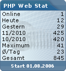

Counter
Neben der PHP-Web-Statistik bieten wir Ihnen einen separaten Counter an, den Sie in Ihrer Webpräsenz einbinden können. Dieser Counter ist an die Statistik gekoppelt und spiegelt einige Daten wieder.
Verwenden Sie den nachstehenden Code um den Counter in Ihre Webseite einzubetten.
<iframe name="stat_counter" src="http://www.example.com/stat/counter.php" style="width:140px; height:150px; border:none; overflow:hidden;"></iframe>
Bitte achten Sie darauf, dass der vollständige Pfad zu der auf dem Server liegenden COUNTER.PHP angegeben werden sollte!
Da es sich hierbei um einen externen Pfad handelt, kann diese Zeile auch unverändert in Unterverzeichnissen des Server verwendet werden.
Die Werte für Weite und Höhe (width, height) sind abhängig von voreingestellten Counter-Einstellungen im Admin Center als auch ggf. hinterlegten Werten im CSS und müssen demnach unter Berücksichtigung dieser Angaben angepasst werden.
Anpassen der Sprache
Wenn Sie den Counter auf Ihrer Webseite in einer anderen Sprachen ausgeben möchten, so ist dies ohne Probleme möglich. Benutzen Sie einfach folgenden Code für die jeweilige Sprache und hägen Sie diesen dem Link an:
- Ausgabe erfolgt in Englisch?language=en
- Ausgabe erfolgt in Niederländisch?language=nl
- Ausgabe erfolgt in Italienisch?language=it
Beispiel: ...stat/counter.php?language=en
Die Statistik wird in deutscher und englischer Sprache ausgeliefert.
Weitere Sprachpakete müssen zunächst heruntergeladen, entpackt und in den Ordner language kopiert werden.
Erst dann ist eine Unterstützung in Niederländisch, Italienisch oder anderer Sprachen möglich.
Welche Sprachen zur Verfügung stehen, können Sie dem Ordner language entnehmen.
Anpassen der Farbgebung mittels CSS
Durch das Anpassen einer CSS Datei (Cascading Style Sheets) können Sie den Counter farblich Ihrer Homepage anpassen. Neben Farben können auch Positionen so wie die Schriftart editiert werden.
Im Admin-Center finden Sie den Menüpunkt "CSS Editor" mit dessen Hilfe Sie den aktuell verwendeten Style nach Belieben verändern können.